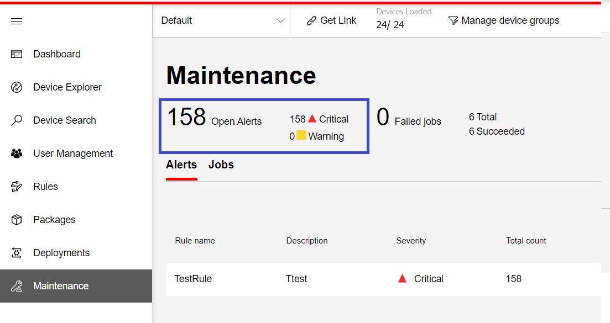
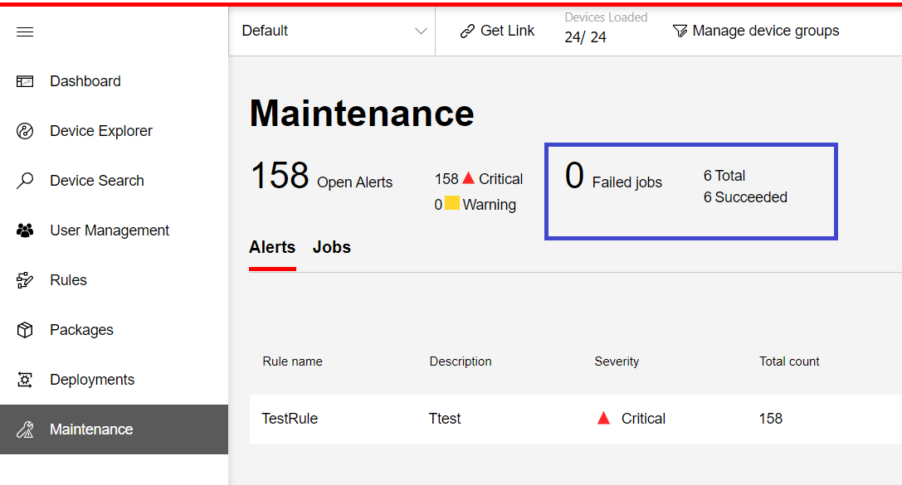
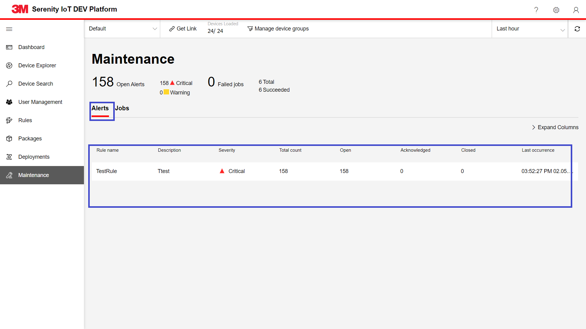
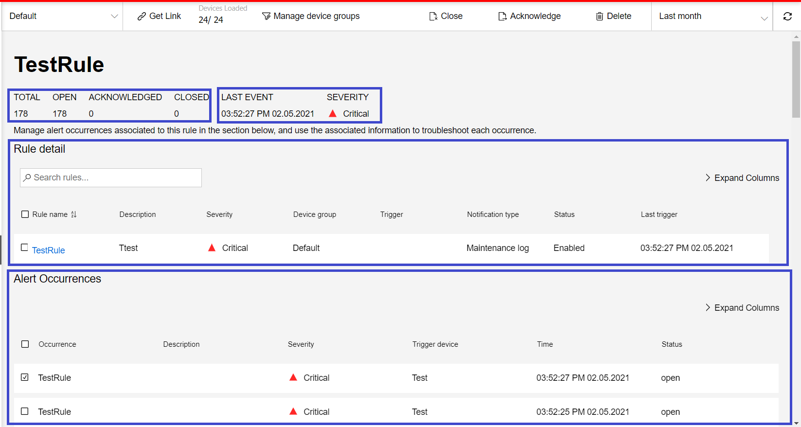
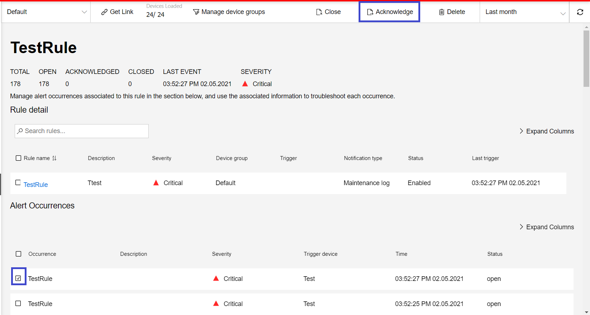
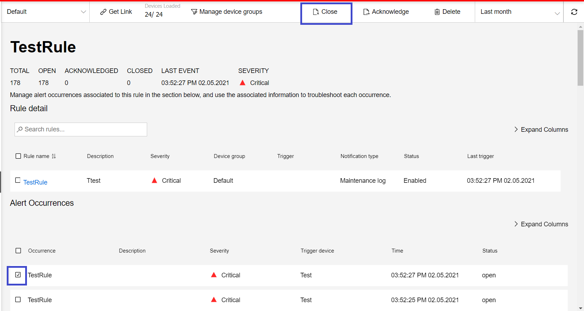
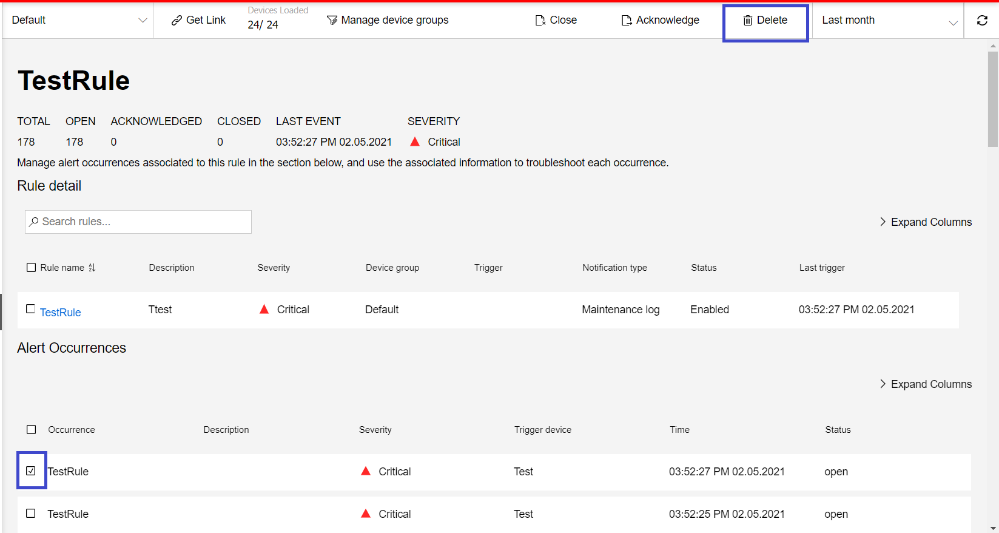
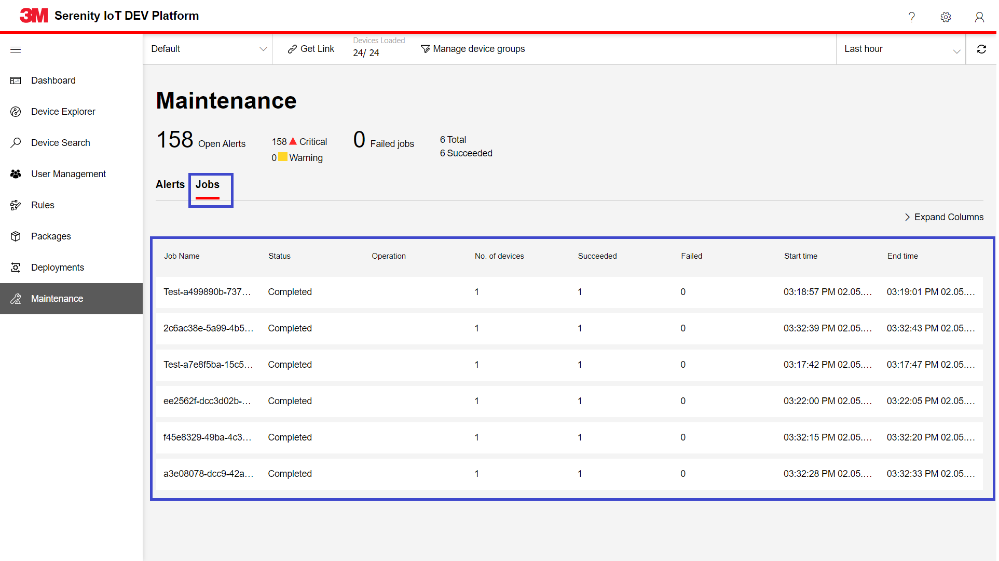
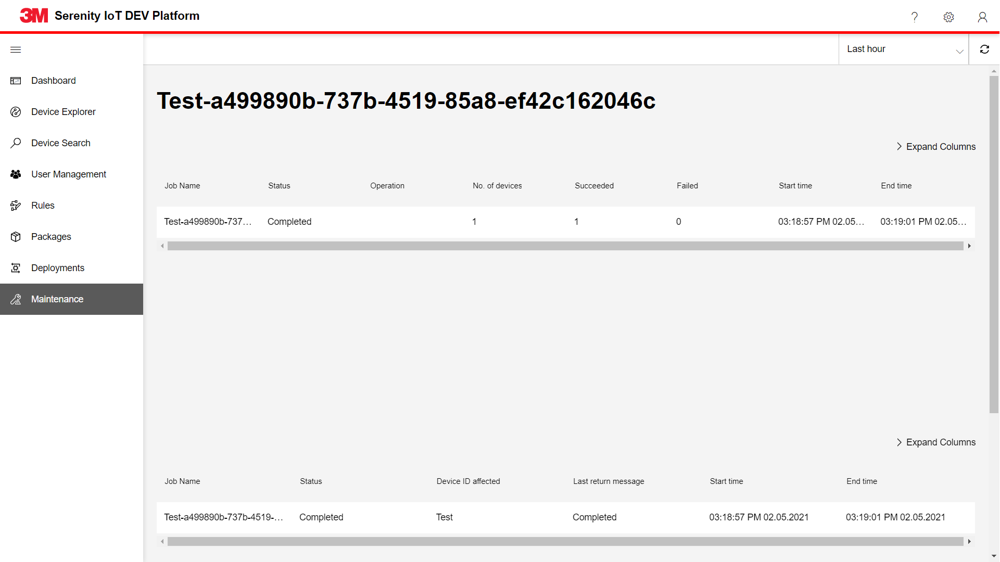

Maintenance
This page allows users to view alerts from devices and different jobs that are running against devices. Below is the information a user can find in the maintenance page:
Summary
A user can refer this section to find the summary of counts for alerts and jobs based on their statuses.
Navigation: Click Maintenance from the left menu
Alert counts
This section displays the counts of alerts based on their statuses and severity:
- Open : Total open alerts
- Critical : Total Critical alerts
- Warning : Total Warning alerts

Job counts
This section displays the counts of jobs based on their statuses like
- Total : Total jobs
- Failed : Total failed jobs
- Succeeded : Total succeeded jobs

Alerts Grid
Alerts tab has a grid that shows the list of alerts based on the rules defined in Rules page

A user can view the alerts grid by following below steps:
- Click on Maintenance from the left menu to navigate to Maintenance page
- Click on Alerts tab
Following lists the columns in Alerts grid.
| Column Name | Description |
|---|---|
| Rule Name | Name of the rule |
| Description | Describes the rule that is being created |
| Severity | Describes the severity of the rule |
| Total Count | Indicates the count of total alerts |
| Open Count | Indicates the count of open alerts |
| Acknowledged Count | Indicates the count of acknowledged alerts |
| Closed Count | Indicates the count of closed alerts |
| Last Occurrence | Describes the rule's last occurrence date |
Alert details
Alert details view shows information about:
- When the alert was triggered
- Statuses of the devices associated with the alert
- Telemetry from the devices associated with the alert

A user can view the alert details by following below steps:
- Click on Maintenance from the left menu to navigate to Maintenance page
- Click on Alerts tab
- Alerts grid loads
- Click on the row of the alert which navigates to details page
The following details are shown in the Alert details page:
- Rule name: Name of the Rule 2.Counts of alert occurrences: Total, Open, Acknowledged, Closed
- Last Event date
- Severity
- Rule details: Rules grid which is similar to the one on Rules page. A user can perform below operations from this grid simlar to rules page:
- View Rule details
- Edit Rule
- Disable Rule
- Delete Rule
- Alert Occurrences: A grid that depicts the occurrences of alerts. A user can perform below operations from this grid:
Acknowledge Alerts
To acknowledge alerts:
- Select the alerts to acknowledge from grid
- A button to Acknowledge appears in the tool bar
- Click the button

Close Alerts
To close alerts:
- Select the alerts to close from grid
- A button to Close appears in the tool bar
- Click the button

Delete Alerts
To delete alerts:
- Select the alerts to delete from grid
- A button to Delete appears in the tool bar
- Click the button

Jobs Grid
Jobs tab has a grid that shows the list of jobs for devices

A user can view the jobs grid by following below steps:
- Click on Maintenance from the left menu to navigate to Maintenance page
- Click on jobs tab
Following lists the columns in Jobs grid.
| Column Name | Description |
|---|---|
| Job Name | Name of the job |
| Status | Status of the job |
| Operation | Describes the severity of the rule |
| No. of devices | Total Device count |
| Succeeded | Succeeded status Device count |
| Failed | Failed status Device count |
| Start time | Datetime when the job started running |
| End time | Datetime when the job completed running |
Job details
Job details view shows:
- Jobs list
- Devices affected

A user can view the job details by following below steps:
- Click on Maintenance from the left menu to navigate to Maintenance page
- Click on Jobs tab
- Jobs grid loads
- Click on the row of the job which navigates to details page